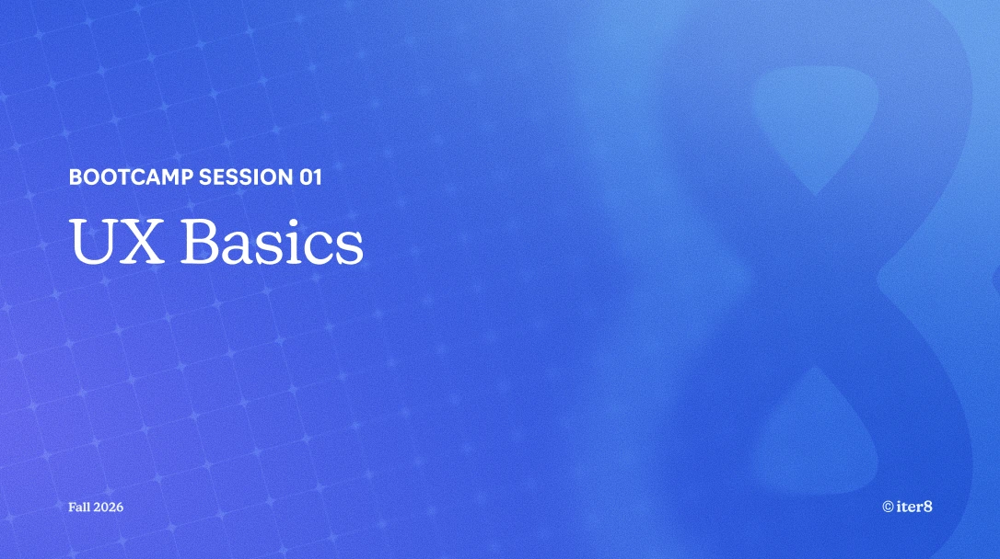
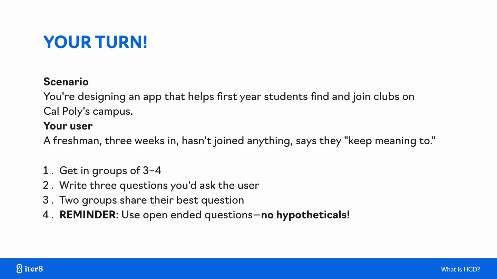
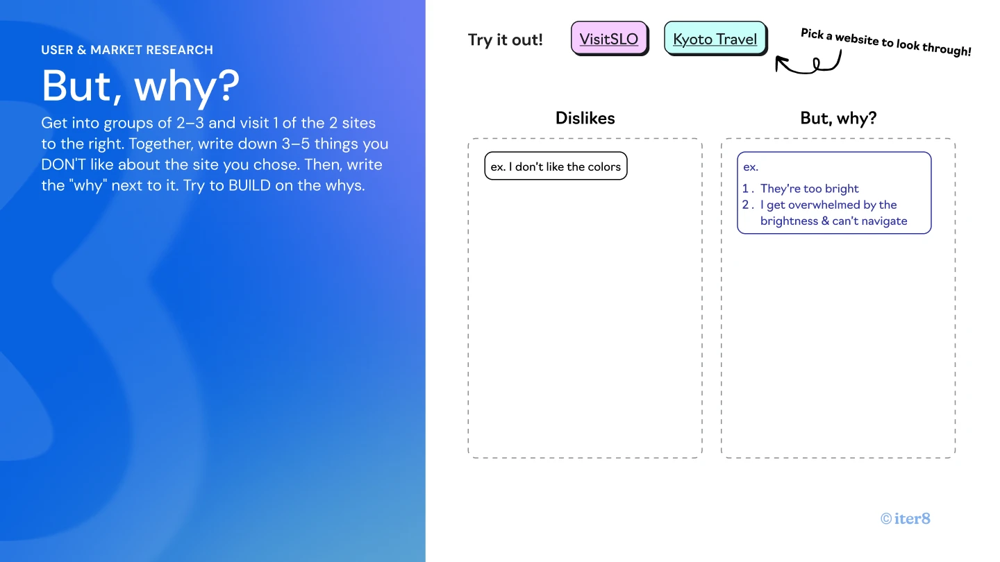
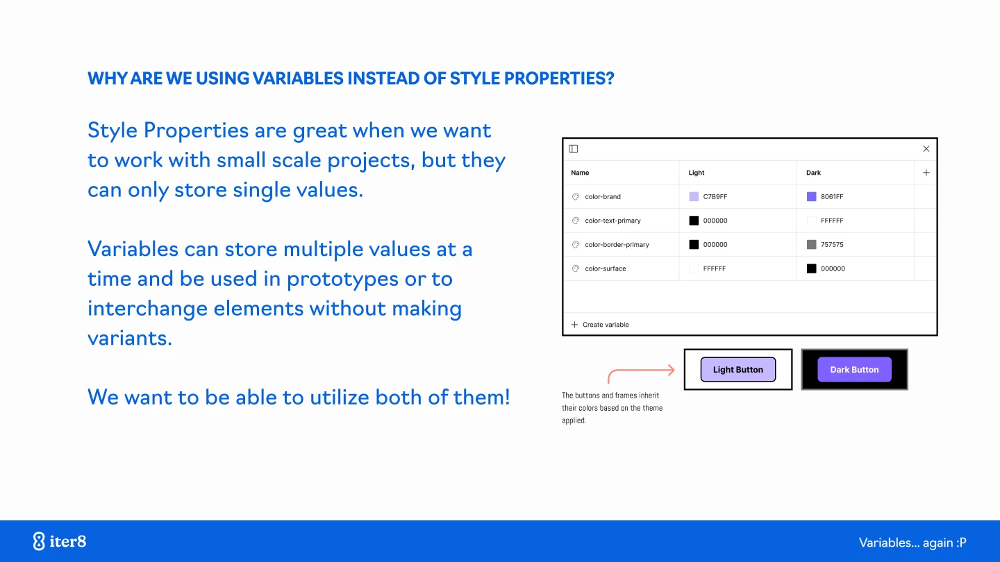
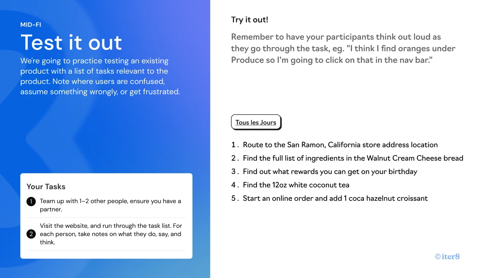

UX Education · Cal Poly Iter8
Iter8 Figma Workshop Lectures
Three weeks into college, a student wants to join a club but still hasn’t. What would you ask them before designing an app?
That’s one of the first problems we give students at Iter8. As Vice President of Events, I teach UX and Figma two nights a week to more than 50 aspiring product designers. I help create the slides, workshops, and exercises, and I run the program from kickoff through the final portfolio showcase.
My aim is for a student to leave bootcamp able to show someone a working prototype and explain one decision they changed after watching a person use it.

Learning What to Ask
In UX Basics, students work in groups of three or four to write three open-ended questions for that first-year student. A question like “Would you use a club finder?” makes it easy to agree with the designer. “Walk me through the last time you tried to join a club” invites a story. The answer might point to a missing meeting time, an awkward first visit, or a problem an app can’t solve.
We introduce interviews, personas, and journey maps as ways to carry that understanding into a design. In a second challenge, groups sketch a campus map screen for someone trying to find their first class. Before sharing the sketch, they identify the user, the actual problem, and one feature worth testing.




Building Interfaces That Can Change
The Figma sequence starts with frames, layers, and text, then spends two lessons each on Auto Layout, components, and variables. A button is a useful way to see why each skill matters. Give it a longer label and the padding should still work. Reuse it on five screens and those instances should still belong to one component. Switch the interface to dark mode and the label should still be readable.
From Color Values to Themes
In the variables activity, students build a collection called Values for black and white. A second collection, Themes, gives those colors jobs: background and text. Students reverse the assignments for dark mode and bind the component fills to those roles.
Switching modes gives students immediate feedback. If a button changes but its label disappears, they know exactly which binding to inspect. Basic Prototyping then takes those reusable pieces into a clickable flow, where another person can try them.


Choosing What to Test at Each Fidelity
Lo-fi sketches make it inexpensive to change the route through a task. Mid-fi screens add enough structure, labels, and interaction for someone else to try that route. By hi-fi, students can use what they observed to refine hierarchy, contrast, and feedback. Each stage answers a different question about the same experience.


A Bakery Website as a Usability Lab
One partner might look for the ingredients in walnut cream cheese bread or start an online order for a croissant. The participant thinks aloud while the observer takes notes. Hearing where someone expects to find ingredients tells a designer more than simply recording whether the search succeeded.
The hi-fi activity brings that method back to the students’ own work. It calls for at least two usability tests of their mid-fi prototype, followed by a heuristic evaluation and annotations identifying at least three visual principles. Those deliverables give students something concrete to point to when explaining the final design.
Leading Through the Showcase
Teaching this series makes me decide what students need to hear and what they need to try for themselves. I can demonstrate a variable binding in a minute. Asking a student to diagnose a disappearing label gives them a skill they can use the next time I’m not in the room.
That same thinking shapes how I organize the program. I lead recruitment and retention efforts, help produce the weekly materials, and plan the final showcase. The question I want a student to be ready for there is simple: “What did you see someone do, and how did it change your design?”
Back to Leadership